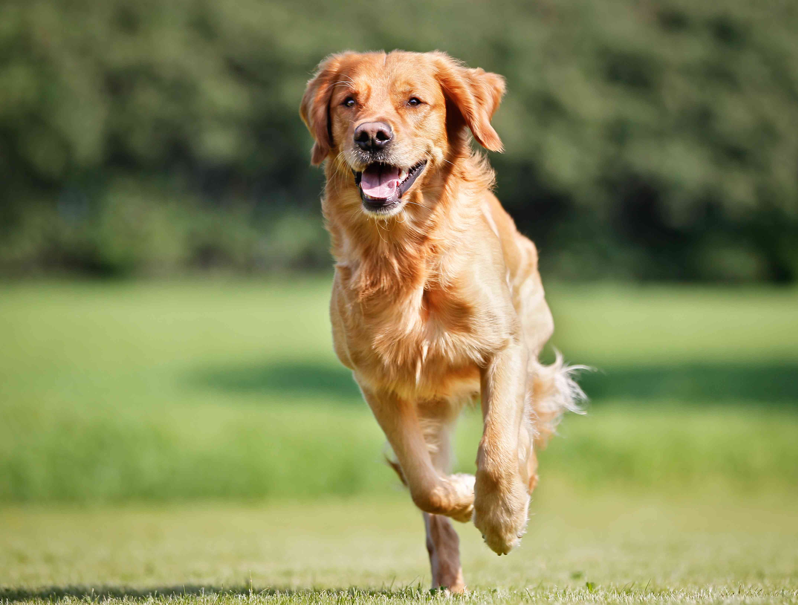

Salud
El ejercicio previene la obesidad: Movimiento para una vida larga
La obesidad es el problema de salud número uno en las mascotas modernas. Se estima que más del 50% de los perros tienen sobrepeso, lo que reduce su esperanza de vida hasta en 2 años. La combinación de una nutrición medida (como la que ofrece Porte) y el ejercicio diario es la única "vacuna" contra este mal.
1. El impacto del sobrepeso en las articulaciones
Cada gramo extra de grasa ejerce presión sobre las articulaciones. Esto es crítico en razas grandes propensas a la displasia de cadera o en perros pequeños propensos a problemas de rodilla.
El ejercicio regular no solo quema calorías, sino que fortalece los músculos que rodean y protegen las articulaciones. Un perro en su peso ideal sufrirá menos dolores de artritis en su vejez y mantendrá su movilidad por mucho más tiempo.
2. ¿Cuánto ejercicio necesita mi perro?
No existe una fórmula única, pero la mayoría de los perros necesitan entre 30 minutos y 2 horas de actividad diaria.
- Razas de alta energía (Border Collie, Labrador): Necesitan ejercicio vigoroso, correr y juegos de buscar.
- Razas braquicéfalas (Pug, Bulldog): Requieren paseos más cortos y frecuentes, evitando el calor excesivo.
- Perros Senior: Caminatas suaves y natación son ideales para bajo impacto.
3. Beneficios más allá del peso
El ejercicio no es solo físico; es mental. Un perro que sale, olfatea y explora libera energía acumulada, reduciendo comportamientos destructivos en casa (como morder muebles o ladrar excesivamente) que a menudo son síntomas de aburrimiento y ansiedad, no de "mala conducta".